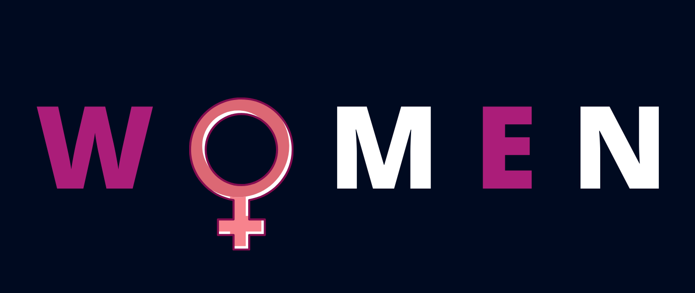

Issue:When we think of the STEM field we usually associate it as a masculine field. Women make up only 28% of the workforce in STEM As early as elementary many girls experience teachers and peers undermining their math and science abilities due to belief that they do not what it takes to do well in these subjects. This treatment and perception that many girls grew up with has discouraged some to not pursue STEM in the future. Since there is this male dominated culture, fewer women study and work in STEM. These fields tend to portray an undesirable, exclusionary, and inflexible environment for women. There is this feeling of not being supported and the field is viewed as less appealing. Accompanying the many factors discussed, there are very few female role models for young women and girls to look up to, to spark their interest in STEM. From the books to the media the examples of females in STEM is limiting. Not having role models makes it challenging for girls understand that STEM is an obtainable field. |
Solutions:To close the STEM gap it is vital for women and girls to feel supported. Here is a list of thing you can do to help:
|